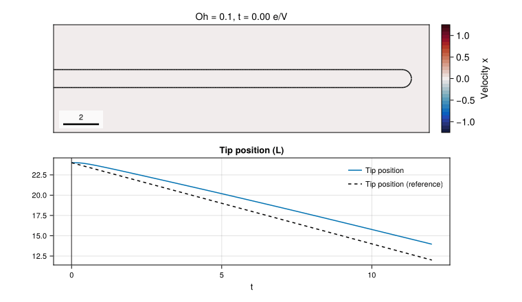
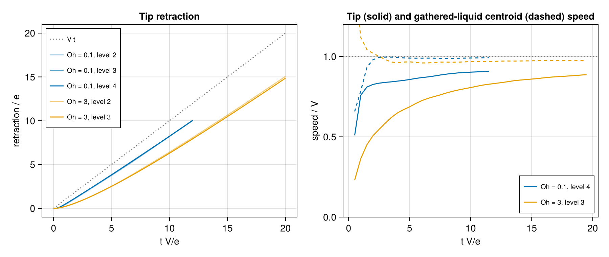
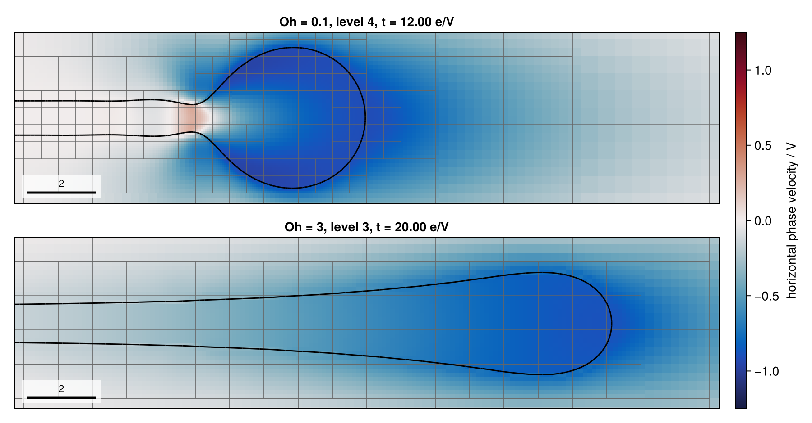
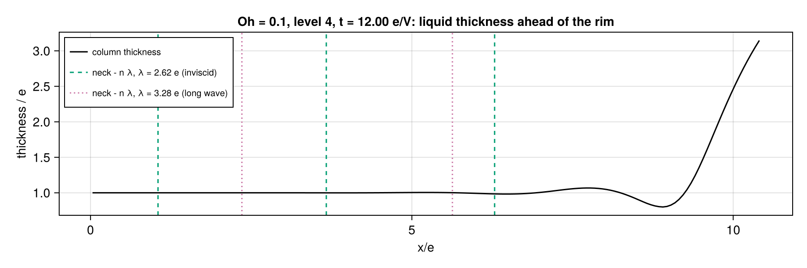
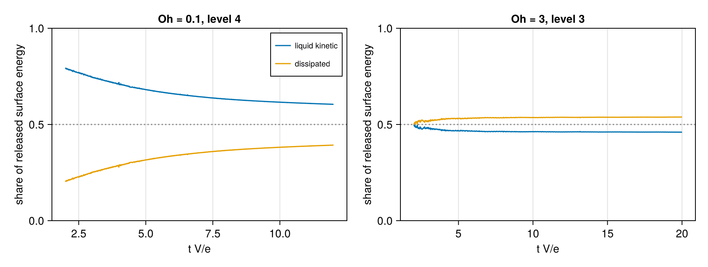

18 – Taylor–Culick sheet retraction
A planar liquid sheet retracts from its free end under surface tension. At Oh = 0.1 the edge gathers into a rim with a neck and capillary waves ahead of it; at Oh = 3 it thickens into a club without a neck. The tip speeds are compared with the Taylor–Culick speed.

At a glance
| Physics | A liquid sheet of thickness e in a gas with ρ_l/ρ_g = 1000, no gravity. The example's units are e = 1, ρ_l = 1 and the Taylor–Culick speed V = √(2σ/(ρ_l e)) = 1, so σ = 1/2 and times are in e/V. The liquid viscosity follows from Oh = μ_l/√(ρ_l σ e) (default 0.1); the gas viscosity is μ_g = 2×10⁻³ √(ρ_l σ e) for every Oh (μ_l/μ_g = 50 at Oh = 0.1, 1500 at Oh = 3). The sheet |y| < e/2 reaches from the free-slip wall x = 0, a symmetry plane (the run is half of a free sheet with two ends), to a semicircular end at x = 24, in the closed free-slip box [0, 32] × [−8.2, 7.8]. |
| Algorithms | TwoVelocityModel() with CMDGFMProjection() (block-preconditioned BiCGSTAB) and the default interphase drag, frozen-interface WY transport, :lhf PLIC with WY fallback, CGFM surface tension, Lax–Wendroff momentum advection and implicit-midpoint viscosity. InterfaceRefinementIndicator refines the sheet and the rim to max_level, checked every 5 steps with coarsening delay 2: unit cells on level 0 and 2^max_level cells across the thickness, 8 at the default level 3. |
| Worth varying | ohnesorge=0.1; density_ratio=1000 and gas_ohnesorge=2e-3 (the gas viscosity in units of √(ρ_l σ e)); sheet_length=24, which lengthens the box with it; max_level=3; final_time=12.0; velocity_model=OneVelocityModel() for one shared velocity. |
| Validated against | The Taylor–Culick tip speed V and ideal liquid momentum 2σt. At Oh = 0.1 and level 4 the tip moves at 0.902V over t = 8–12 and momentum stays within 1.1% of 2σt for t ≥ 1. The example's gathered-liquid centroid, an excess-thickness metric rather than a tip speed, moves at 0.990V. At Oh = 3 and level 3 the tip is still accelerating (0.879V over t = 16–20); the largest thickness follows the Savva & Bush (2009) law within 2% up to t = 4. The Oh = 0.1 capillary-wave crest spacing is 2.50e, against 2.62e for inviscid varicose waves standing in the rim's frame. |
| Cost | Default (level 3, T = 12): 851 steps, 8192 final cells, 71.9 s. In the figure script, level 4 took 668.6 s (2406 steps, 17216 final cells) and Oh = 3 on level 3 with sheet_length = 56 to T = 20 took 316.9 s (1418 steps, 15616 final cells). |
Gallery timings: Julia 1.12.7, one Julia thread, AMD Ryzen 9 5950X; package loading is excluded unless stated. These runs shared the machine with other jobs.
Setup
The two surfaces of the sheet pull its free edge with the force 2σ per unit length, and the edge gathers the sheet it overtakes. An edge moving at a constant speed V gains the momentum ρ_l e V² per unit time, so (Taylor 1959; Culick 1960)
\[V=\sqrt{\frac{2\sigma}{\rho_l e}},\qquad \mathrm{Oh}=\frac{\mu_l}{\sqrt{\rho_l\sigma e}},\qquad \tau_\mathrm{inv}=\frac{e}{V},\qquad \tau_\mathrm{vis}=\frac{\mu_l e}{2\sigma}=\frac{\mathrm{Oh}}{\sqrt2}\,\tau_\mathrm{inv},\]
which is also the speed of long antisymmetric waves on the sheet (Taylor). The speed does not depend on the viscosity, which shapes the edge and sets the transient. Savva & Bush (2009) use Oh = μ_l/√(2ρ_lσe). Converted to this example's convention, their transient is on the inertial time τ_inv below Oh = √2 and on the viscous time τ_vis above it; their regime map (Fig. 2) has capillary waves ahead of the rim below Oh ≈ 0.14 and a rim that spreads into the sheet up to Oh ≈ 14. By Brenner & Gueyffier (1999) a rim forms only when the Stokes length ν_l/V = Oh e/√2 is shorter than the sheet; on a sheet that the viscous region spans, the edge slows down instead of reaching V (Deka & Pierson 2020). The liquid momentum is exactly 2σt from rest as long as the sheet ahead is undisturbed and the gas exerts no force, whatever the shape of the edge. The kinetic energy of a steady rim grows at σV, half of the surface energy 2σV that the shortening sheet releases; Culick attributed the other half to dissipation in the inelastic accretion of the sheet (Sanjay et al. 2022, appendix A).
The level set is |y| − 1/2 for x ≤ 23.5 and the distance to the circle of radius 1/2 about (23.5, 0) beyond; both phases start at rest. The box is shifted by 0.2 in y so that no sheet surface lies on a cell face of any level: such a surface has pure cells on both sides, no PLIC segment and no curvature. The diagnostics are :tip_position, the liquid length on the midplane (interface_height in x at y = 0); :edge_thickness, twice the largest |y| on the PLIC interface; the liquid x-momentum :liquid_momentum and :liquid_kinetic_energy, with the mass-compatible face fractions of mixture_density; and KineticEnergy(), SurfaceEnergy(), LinearMomentum() and PhaseVolume().
At Oh = 3 the viscous stresses spread the retraction along the sheet like a diffusion with the extensional coefficient 4ν_l; the figure script uses sheet_length = 56 for this case.
The two-velocity CMDGFM projection is the documented choice for thin films (choosing a model); MimeticProjection() is not used, because, unlike the CMDGFM, it does not bound the light-phase values next to the interface. One shared velocity gives the same late tip speed within 0.3% at level 3 (see below).
Run
From the repository root, in a Julia session started with --project=examples:
include("examples/18_taylor_culick/taylor_culick.jl")
run = run_example()
tip = diagnostic_history(run.flow, :tip_position)
@show (tip.values[1] - tip.values[end]) / tip.times[end]Run the example headlessly or regenerate the Cairo figures:
julia --project=examples examples/18_taylor_culick/taylor_culick.jl
julia --project=examples -e 'include("examples/18_taylor_culick/make_figures.jl"); make_figures()'Append --studio to the example command to follow the run in a browser; press Ctrl+C to close Studio after the run.
make_figures runs eight cases for both sizes, which only scale the figures: Oh = 0.1 on levels 2, 3 and 4 to t = 12, Oh = 3 on levels 2 and 3 to t = 20 with sheet_length = 56, and three level-3 variants of the default case.
Results
Retraction speed

Speeds are in units of V, measured from least-squares slopes of position on windows of one e/V. The gathered-liquid centroid weights each column by max(h − e, 0), where h is its liquid thickness; it tracks the excess liquid in the thickened edge, not a material point. The table gives slopes over the last four time units, t = 8–12 for Oh = 0.1 and t = 16–20 for Oh = 3, and the liquid momentum against the ideal 2σt.
| Run | Cells per e | Steps | Final cells | Time | Tip speed | Gathered-liquid centroid speed | P/(2σt) at the end | Largest deviation for t ≥ 1 |
|---|---|---|---|---|---|---|---|---|
Oh = 0.1, level 2 | 4 | 301 | 3200 | 77.5 s* | 0.908 | 0.985 | 0.968 | 9.4% |
Oh = 0.1, level 3 | 8 | 851 | 8192 | 71.9 s | 0.896 | 0.981 | 0.979 | 2.1% |
Oh = 0.1, level 4 | 16 | 2406 | 17216 | 668.6 s | 0.902 | 0.990 | 0.990 | 1.1% |
Oh = 3, level 2 | 4 | 502 | 7552 | 40.8 s | 0.887 | 0.977 | 0.974 | 13.6% |
Oh = 3, level 3 | 8 | 1418 | 15616 | 316.9 s | 0.879 | 0.975 | 0.985 | 3.3% |
* Includes the first-call compilation of the script.
The momentum balance converges with the resolution, to 1.1% at 16 cells per thickness: the CGFM force on the curved edge adds up to the 2σ of the flat surfaces. The speeds change by at most 1.5% between levels 3 and 4 (Oh = 0.1) and 2 and 3 (Oh = 3), and the level-4 and level-3 tips end within 0.0003e.
At Oh = 0.1 the gathered-liquid centroid is at 0.980V on the window around t = 2 and 0.9876–0.9958V for t = 3–11 at level 4, consistent with an inertial transient of a few τ_inv (Savva & Bush (2009); Gordillo et al. (2011)). The tip lies behind the centre of the growing rim and lags by the growth rate: (1 − V_tip/V)√(Vt/e) stays at 0.31 ± 0.02 from t = 4 to 11, consistent with the t^(−1/2) asymptotic rate. The first half-unit-spaced window with tip speed at or above 0.9V is centred at t = 9.5. If that scaling persists, the tip would reach 0.95V near t = 40, beyond the measured interval.
At Oh = 3 there is no nearly circular rim. The centroid can move quickly as the thickened region spreads, even while the tip is still accelerating: on the level-3 window around t = 19, the centroid moves at 0.975V and the tip at 0.884V. The liquid momentum is within 3.3% of 2σt for t ≥ 1, consistent with a long viscous transient rather than a missing capillary force. Early on, the largest thickness follows the high-viscosity law for a semicircular end, e(1 + t/(4τ_vis)) (Savva & Bush, eq. 2.29): +1.7%, +0.8% and −0.2% at t = 1, 2 and 4 on level 3. It then falls below the law by 2.2%, 5.2% and 10.3% at t = 8, 12 and 20. The law is for Oh ≫ 1; in their convention the run has Oh = 2.1.
Rim, neck and capillary waves

At t = 12 the Oh = 0.1 rim is nearly round, 4.11e across after a retraction of 10.0e, and moves at about −V as a whole; a neck 0.80e thick joins it to the sheet. At t = 20 the Oh = 3 edge is a club 3.01e thick that tapers into the sheet across the whole window, without a neck: the diffusing rim of Savva & Bush, with a Stokes length of 2.1e.

Ahead of the neck at x = 8.91 the column thickness has a crest at x = 7.72, a trough at 6.47 and a weak second crest at 5.22: crest to crest 2.50e, neck to trough 2.44e. Waves that stand still in the frame of the rim travel through the sheet at V. With the linear dispersion relation of symmetric capillary waves on an inviscid sheet, ω² = (σk³/ρ_l) tanh(ke/2), this requires (ke/2) tanh(ke/2) = 1, so λ = 2.62e (derived here); Gordillo et al.'s long-wave model gives πe/√(1 − 4Ω²) = 3.28e with their Ω = √2 Oh. The measured spacings are 4.5% and 6.8% below the inviscid value and 24–26% below the long-wave one. The waves decay within two wavelengths, and the neck stays far from pinching off: Gordillo et al. find that the neck tends to half the sheet thickness as Oh → 0 and no pinch-off in two dimensions (Song & Tryggvason 1999 had suggested one in the inviscid limit).
Energy

| Run | Released surface energy | Liquid kinetic | Gas kinetic | Dissipated | Rates on [T/2, T]: release, liquid kinetic |
|---|---|---|---|---|---|
Oh = 0.1, level 4, t = 12 | 8.592 | 5.195 (0.605) | 0.022 (0.003) | 3.375 (0.393) | 0.808, 0.454 |
Oh = 3, level 3, t = 20 | 14.329 | 6.597 (0.460) | 0.019 (0.001) | 7.714 (0.538) | 0.832, 0.381 |
Energies are per unit depth, in units of ρ_l V² e², with shares of the released surface energy in parentheses; the dissipated energy is the release minus the kinetic energy of both phases, viscous and numerical (the CMDGFM conserves momentum but not kinetic energy). Over the second half of the runs the liquid kinetic energy grows at 91% (Oh = 0.1) and 76% (Oh = 3, still accelerating) of Culick's σV = 0.5. The surface energy falls at 0.81 and 0.83, less than the 2σV = 1 of a sheet consumed at V, because the growing edge gains surface. The dissipated share rises from about 0.2 at t = 2 to 0.39 at t = 12 at Oh = 0.1, and stays near 0.53 from t ≈ 3 on at Oh = 3.
Faces without curvature
CGFM surface tension applies no force on a face whose curvature is not resolved. The solver sums such faces over steps (total_unresolved_curvature_faces in the simulate! result); the sum is zero in all eight runs. In exploratory runs with the box centred on the sheet, the flat surfaces lay on cell faces: the sums were 5189 on level 3 and 91507 on level 4, not counts of distinct faces. A level-3 census found unresolved faces between pure cells on the flat sheet, and 34 edge faces on the first step and none on the second. The level-4 box-shift control changed the tip at t = 12 from 13.9577 to 13.9576; this control was not performed at level 3.
Gas density and velocity model
Level-3 Oh = 0.1 variant | Tip speed | Gathered-liquid centroid speed | P/(2σt) at t = 12 | Gas kinetic share | Time |
|---|---|---|---|---|---|
default: ρ_l/ρ_g = 1000, two velocities | 0.896 | 0.981 | 0.979 | 0.003 | 71.9 s |
ρ_l/ρ_g = 100 | 0.883 | 0.969 | 0.955 | 0.019 | 58.9 s |
ρ_l/ρ_g = 10 | 0.807 | 0.893 | 0.816 | 0.114 | 56.8 s |
OneVelocityModel() | 0.898 | 0.987 | 0.985 | 0.003 | 82.8 s |
The theory assumes a vacuum. Compared with the default, the liquid momentum at t = 12 falls by 2.4 and 16.2 percentage points of 2σt at density ratios 100 and 10, and the gathered-liquid centroid slows by 1.3% and 9.0%. A rim that drags the added mass ρ_g πR² of a cylinder would move at V/√(1 + ρ_g/ρ_l), only 0.5% and 4.7% slower (an estimate, not a literature result). The gas can also cause sheet flapping (Lhuissier & Villermaux (2009)); this symmetric planar run does not establish its stability to such perturbations. One shared velocity reproduces the two-velocity tip speed within 0.3% and the centroid speed within 0.6%.
Variations
run_example(max_level = 4) # 16 cells per thickness
run_example(ohnesorge = 3.0, sheet_length = 56, final_time = 20.0) # viscous edge
run_example(density_ratio = 10.0) # a dense gas slows the rim
run_example(velocity_model = OneVelocityModel()) # one shared velocityFiles
- taylor_culick.jl – setup, diagnostics and the
run_exampleentry point. - make_figures.jl – the eight runs, their speed, momentum and energy reductions, the figures and the animation.
References
- G. I. Taylor, The dynamics of thin sheets of fluid. III. Disintegration of fluid sheets, Proc. R. Soc. Lond. A 253, 313–321 (1959), doi:10.1098/rspa.1959.0196.
- F. E. C. Culick, Comments on a ruptured soap film, J. Appl. Phys. 31, 1128–1129 (1960), doi:10.1063/1.1735765.
- M. P. Brenner and D. Gueyffier, On the bursting of viscous films, Phys. Fluids 11, 737–739 (1999), doi:10.1063/1.869942.
- M. Song and G. Tryggvason, The formation of thick borders on an initially stationary fluid sheet, Phys. Fluids 11, 2487–2493 (1999), doi:10.1063/1.870113.
- N. Savva and J. W. M. Bush, Viscous sheet retraction, J. Fluid Mech. 626, 211–240 (2009), doi:10.1017/S0022112009005795.
- H. Lhuissier and E. Villermaux, Soap films burst like flapping flags, Phys. Rev. Lett. 103, 054501 (2009), doi:10.1103/PhysRevLett.103.054501.
- L. Gordillo, G. Agbaglah, L. Duchemin and C. Josserand, Asymptotic behavior of a retracting two-dimensional fluid sheet, Phys. Fluids 23, 122101 (2011), doi:10.1063/1.3663577.
- H. Deka and J.-L. Pierson, Revisiting the Taylor–Culick approximation. II. Retraction of a viscous sheet, Phys. Rev. Fluids 5, 093603 (2020), doi:10.1103/PhysRevFluids.5.093603.
- V. Sanjay, U. Sen, P. Kant and D. Lohse, Taylor–Culick retractions and the influence of the surroundings, J. Fluid Mech. 948, A14 (2022), doi:10.1017/jfm.2022.671.